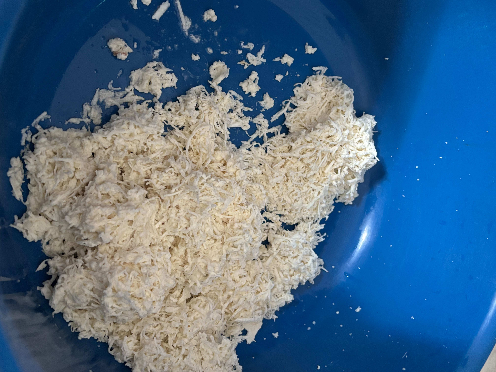
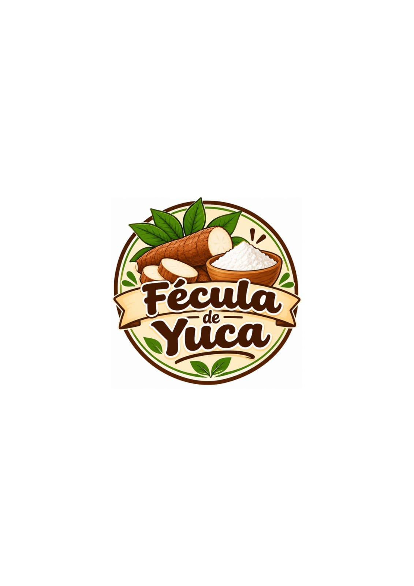
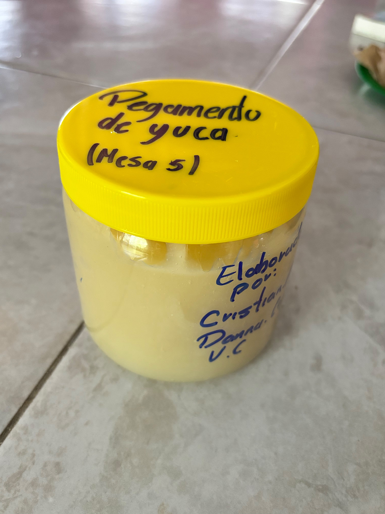
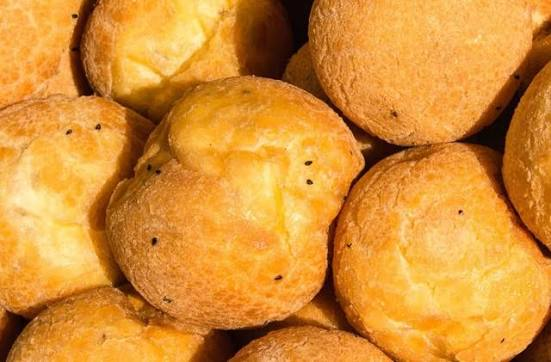

Galería de nuestro producto



Te damos la bienvenida a nuestra página dedicada a la fécula de yuca, un producto de origen vegetal obtenido a partir de la raíz de la yuca.
Aquí podrás conocer más sobre nuestro producto, sus características, algunos de sus usos y la forma de contactarnos para realizar una compra.
La fécula de yuca es un producto obtenido del almidón presente en la raíz de la yuca. La yuca es una planta cuya raíz contiene una cantidad importante de almidón, un carbohidrato que puede utilizarse en diferentes productos.
La fécula se caracteriza por su textura fina y puede ser utilizada como ingrediente en distintas preparaciones.
Conocer las propiedades y aplicaciones de la fécula obtenida de la yuca y presentar este producto como una alternativa de origen vegetal.
• Identificar las principales características de la yuca y su contenido de almidón.
• Dar a conocer algunos usos que puede tener la fécula de yuca.
• Presentar nuestro producto y ofrecer información a las personas interesadas en adquirirlo.
Para trabajar con la yuca y obtener productos a base de su almidón, se pueden utilizar diferentes materiales y utensilios.
Es la materia prima de la cual se obtiene el almidón.
Se utiliza durante diferentes etapas de preparación.
Permite colocar y conservar los materiales.
Es útil para mezclar los ingredientes.
Puede utilizarse para separar materiales durante el proceso.
Puede utilizarse para procesar la raíz de yuca.

Ofrecemos fécula de yuca como un producto de origen vegetal. Nuestro objetivo es dar a conocer este producto y sus posibles aplicaciones.
Presentación: Puedes escribir aquí el tamaño o cantidad de tu producto.
Precio: $35
Disponibilidad: Consulta con nosotros para conocer la disponibilidad del producto.

Puede utilizarse como ingrediente en diferentes productos de panadería.
Puede incorporarse en algunas preparaciones de productos horneados.
Puede utilizarse para dar consistencia a algunas preparaciones.
Puede formar parte de diferentes recetas y productos.

Si deseas conocer más sobre nuestro producto o realizar una compra, puedes comunicarte con nosotros.
📱 Teléfono: 9331308133
📧 Correo: dannaguadalupe@gmail.com
📍 Ubicación: Tabasco, México
🌿 ¡Gracias por visitar nuestra página y conocer nuestro producto!